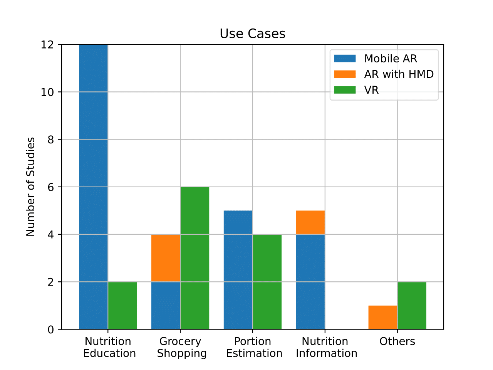

Augmented and Virtual Reality for Diet and Nutritional Education: A Systematic Literature Review
(opens in new tab)

Venue. PETRA (2024)
Materials.
DOI(opens in new tab)
PDF(opens in new tab)
Abstract. A healthy diet is becoming more difficult due to the increasing amount of processed foods, misinformation, or inadequate education about nutrition, which can lead to a variety of diseases in the long term. Supporting people with proper nutrition and diet education is therefore indispensable. As Augmented and Virtual Reality have become promising technologies for education, they are also becoming more common for diet and nutrition education and have been featured in several studies. Both technologies can display additional product information to the user or educate them through new learning applications to support healthy eating. As recent papers only address the use of AR or do not include current research findings, this paper provides a new systematic literature review with recent studies on AR/VR for nutrition and diet education. This paves the way for new research and approaches in this field and suggests future research directions. Overall, 41 out of 375 articles were extracted, categorized, and analyzed. The findings reveal that, especially for the nutritional education of children, AR games have a promising application. VR, on the other hand, is increasingly utilized for virtual supermarkets. The applications help users to better understand and memorize the educational materials about nutrition and expand their knowledge about their diet. In addition, the applications are usually easy to use and users want to continue using them in the future.
Link to this page: